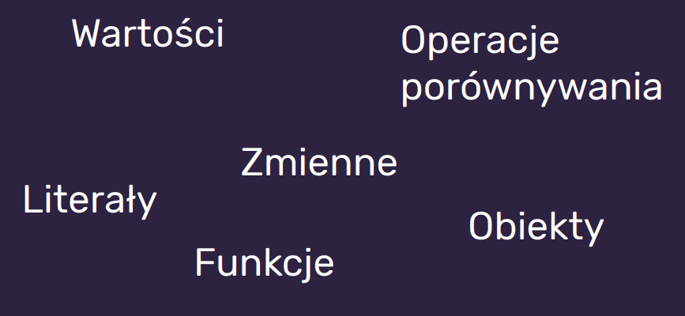

| JAVASCRIPT |
| CSS |
| HTML |
| Treść |
Javascript jest ostatnią warstwą mającą kontrolę nad wszystkimi innymi.
Będziemy uczyć się ECMAScript 2015+ (ES6+)
Co to jest ECMAScript 6+
- ECMAScript jest to ustandaryzowany przez organizację ECMA skryptowy język programowania
- JavaScript implementuje rzeczy ze specyfikacji ECMAScript
- Rozwój ECMAScript mocno przyspieszył przez szerokie wykorzystywanie JavaScriptu
- ES6 (i nowsze) wprowadzają wiele udogodnień dla developerów
- Nowe feature'y mogą nie być wspierane we wszystkich przeglądarkach (ale są na to sposoby 😎)
Z czego składa się JavaScript?
Podobnie jak style - mają też swój znacznik - <script>
console.log('Siema!');
console.log(name);
console.log(`Nazywam się ${name} i mam ${age} lat`);